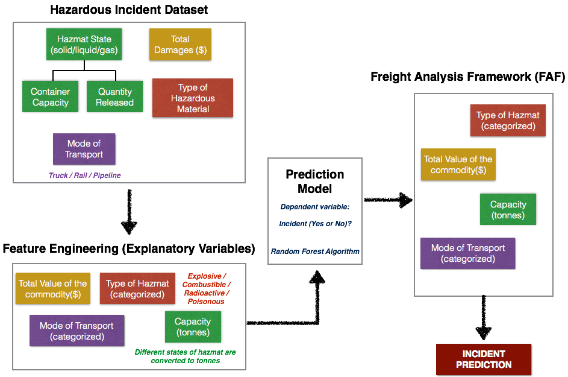

This model uses the incident report database from The Office of Hazardous Materials Safety to ascertain an incident occurrence based on the type of hazardous material transported, the mode of transportation, container capacity, and the value of commodity. The model trained on incident data is then used on Freight Analysis Framework (FAF) data from Oak Ridge National Laboratory to determine the incident occurrence at city level spatial resolution. The incident prediction is algorithm is developed using R. Python is used to obtain the coordinates of the cities, which is then used by to visualize the maps using Leaflet Javascript library.
The main goal of this prediction model is to be able to use the FAF dataset to predict incidents. FAF dataset consists of freight movements between various cities. The data is given in terms of total tonnage hauled (tons), total value (millions of dollars), mode of transport, and commodity (hazardous material) type (paint, automotive fuel, electronic waste, etc.). As the first step, we engineered the features in incident database in such a way that the model could be trained on data similar to FAF dataset. The incident database consists of quantity released, container capacity, state of hazardous material (solid / liquid / gaseous), commodity type (ranging from explosives, combustible fuel to poisonous chemicals), and damage expressed in USD. Figure 1 shows the flowchart of the model design.
The FAF dataset contains only tonnage information. However, in the incident dataset, liquids were expressed in gallons, gaseous materials were expressed in cubic feet and solids were expressed in pounds. We converted different states of hazardous material to a common unit (tons). Liquid gallons were assumed to have similar density to that of gasoline or automotive fuels (1 gallon = 0.031 tons), gaseous materials were assumed to have similar density to that of natural gas (1 cu.feet = 0.00025 tons). Secondly, FAF dataset contains total value of commodity transported, but in the incident database we only have the value of damages (which relates to the quantity released attribute). Using the values of capacity, quantity released and damages, we were able to obtain the total value of the commodity transported in the route.
Moreover, the commodity types were categorized over 250 types of specific hazardous materials. We categorized them into five groups: (a) Explosives, (b) Flammable, (c) Poisonous, (d) Radioactive and (e) Miscellaneous. The FAF dataset commodities were also categorized in similar fashion. The incident dataset has an indicatory variable that conveys whether an incident took place for a given datapoint. A classifier algorithm (randomforest) is developed using the explanatory variables on the subset of the dataset to train the data. The model is then tested on the rest of the dataset. The accuracy of classification of this model is about 98%. This model is then used on the FAF dataset to identify which locations are more incident prone.